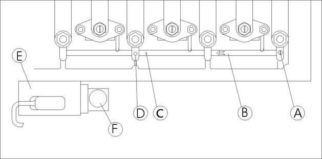

главная → ЭСУД STEYR
КАЛИБРОВКА НАЧАЛЬНОГО ПОЛОЖЕНИЯ ТОПЛИВНОЙ РЕЙКИ
- Механическая настройка и электронная калибровка начального положения топливной рейки должна производиться в случае, если выполнялись следующие работы:
- переустановка или замена датчика положения топливной рейки;
- замена контроллера управления двигателем;
- переустановка или замена электромагнита управления топливной рейкой;
- разборка или замена насос-форсунки.
- Рейка должна быть зафиксирована штифтом на 3-й опоре корпуса распределительного вала. В этом положении контроллер запоминает начальное положение топливной рейки RPOS=18 мм (рис. 5).

Схема настройки начального положения топливной рейки:
A—направляющий штифт;
B—топливная рейка;
C—ориентирующее отверстие в топливной рейке;
D—ориентирующее отверстие на 3-й перегородке корпуса распредвала;
F—датчик положения топливной рейки;
E—электромагнит управления топливной рейкой (насос-форсункой).
- Порядок настройки и калибровки топливной рейки:
- выключить зажигание автомобиля;
- вывернуть направляющий штифт A, установленный в отверстие 1-й (задней) опоры корпуса распредвала;
- переместить топливную рейку B до совмещения ориентирующих отверстий C (в топливной рейке) и D (в 3-й опоре корпуса распредвала);
- застопорить топливную рейку B на корпусе распредвала, ввернув направляющий штифт A в отверстия C и D;
- включить зажигание автомобиля на время не менее 10 секунд—начальное положение топливной рейки будет зафиксировано в долговременной памяти контроллера (EEPROM);
- вывернуть направляющий штифт A и возвратить его на прежнее место, т.е. ввернуть штифт A в отверстие 1-й (задней) опоры корпуса распредвала;
- выбрать с помощью сканер-тестера или диагностической программы процедуру "Диагностика начального положения топливной рейки» и проконтролировать параметры системы управления двигателем, они должны принять следующие значения:
- RPOS =18 мм—фактическое положение топливной рейки;
- SRPOS=35...135—условное положение топливной рейки.
- Контроллер установит аварийное значение SRPOS=60, при следующих условиях:
- неправильная калибровка топливной рейки: начальное положение рейки ниже минимально допустимого значения (см. Код 056) или начальное положение рейки выше максимально допустимого значения (см. Код 057);
- неисправности цепи датчика положения топливной рейки (см. Код 035, Код 036);
- неисправностей цепи электромагнита управления топливной рейкой (см. Код 186, Код 187, Код 188).
- Если SRPOS<35—двигатель не обеспечит полную мощность, т.к. не будет полного открытия насос-форсунки при полном нажатии газ-педали.
- Если SRPOS>135—двигатель будет иметь повышенные минимальные обороты ХХ.
- Параметр SRPOS рассчитывается по формуле: SRPOS=IRPOS-864;
- где IRPOS—условная величина положения топливной рейки при калибровке—она должна находиться в пределах 900...1024.
- Рекомендуемые нормативные параметры фактического положения топливной рейки:
- RPOS= 6 мм—на минимальной частоте ХХ;
- RPOS=13 мм—на режиме полной мощности;
- RPOS=18 мм—после калибровки на неработающем двигателе (зажигание должно быть включено).
|